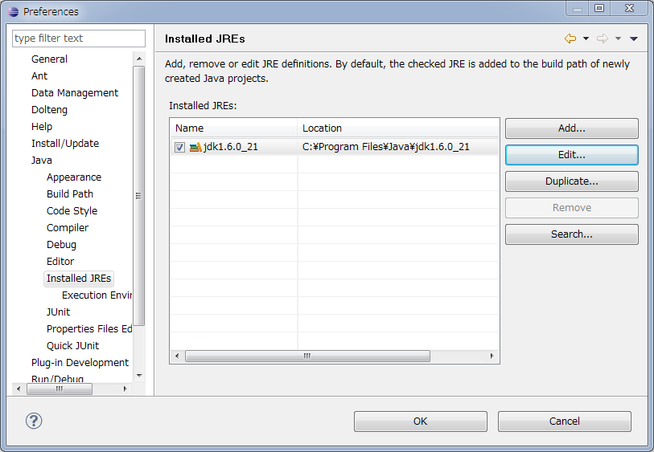
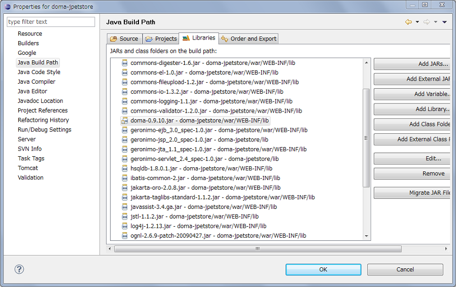
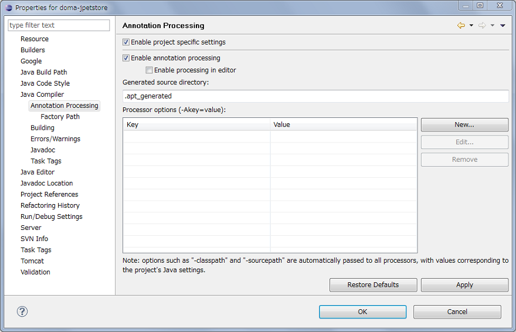
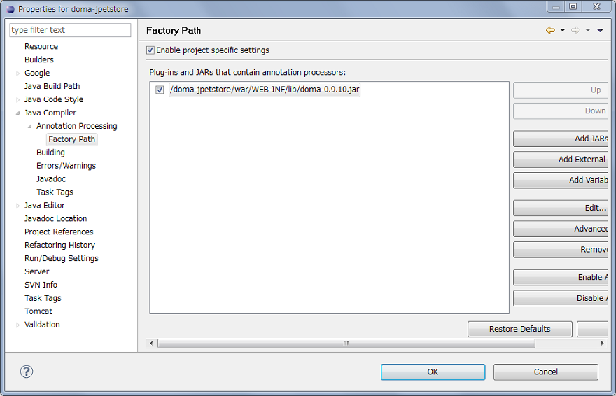

セットアップ
JDKのインストール
バージョン6以上のJDKをインストールします。 JREではなくJDKが必要であることに注意してください。 JDK 6 は以下のURLのサイトからダウンロードできます。
http://www.oracle.com/technetwork/java/javase/downloads/index.html
Eclipseのインストール
バージョン3.5以上のEclipseをインストールします。 Pluggable Annotation Processing API をサポートしていれば、Eclipse以外のIDEであってもかまいませんが、 このドキュメントではEclipseを使うことを前提に説明を進めます。 Eclipseは以下のURLのサイトからダウンロードできます。
http://www.eclipse.org/downloads/
Eclipseは、バージョン6以上のJDKに含まれるJREで起動されるようにしてください。 明示的にJREを指定するには、-vm オプションを使用します。
-vm %JAVA_HOME%\bin\javaw.exe
Eclipseの設定
Installed JREsに、バージョン6以上のJDKに含まれるJREを登録します（登録されていない場合）。
Installed JREsの設定は、メニューの Window - Preferences と選択してPreferences画面を開き、左のメニューから Java - Installed JREs と辿ります。
プロジェクトの設定
EclipseのJavaプロジェクトや動的Webプロジェクトに対し、以下の設定を行います。
JREの設定
プロジェクトのJREの設定項目には、Eclipseの設定で登録したJREを指定してください。
ビルドパス（Build Path）の設定
doma-x.x.x.jarをプロジェクトのビルドパスに追加してください。
注釈処理（Annotation Processing）の設定
プロジェクトのプロパティ画面を開き、左側のツリーメニューから Java Compiler - Annotation Processing と辿り、 「Enable project specific settings」のチェックボックスにチェックを入れてください。
「Generated source directory」のテキストボックスに記入された値を確認してください。 デフォルトでは「.apt_generated」です。 注釈処理により生成されたソースコードはプロジェクト直下のこの名前のディレクトリに格納されます。
ファクトリパス（Factory Path）の設定
プロジェクトのプロパティ画面を開き、左側のツリーメニューから Java Compiler - Annotation Processing - Factory Path と辿り、 「Enable project specific settings」のチェックボックスにチェックを入れてください。
次に、「Add JARs...」ボタンを押して、ビルドパスに通したdoma-x.x.x.jarと同じjarをファクトリパスにも追加してください。
セットアップの確認
エンティティクラスの作成
注釈処理が行われることを確認するため、エンティティクラスを作成します。 Javaエディタを開き、次のようなクラスを作成してください。
package example;
import org.seasar.doma.Entity;
@Entity
public class Employee {
String name;
}
ビルド後（自動でビルドされる設定ならばエディタの保存後）に、実装クラス「example._Employee」が自動生成されれば、セットアップは成功していると言えます。 生成されたソースコードは、注釈処理（Annotation Processing）の設定画面で変更していなければ、プロジェクト直下の「.apt_generated」というディレクトリに保存されます。 「.apt_generated」は、デフォルトではPackage Explorerビューに表示されません。 Package Explorerビューのフィルタリングの設定を変更するか、Nivigatorビューで確認してください。
その他
セットアップがうまくいかない場合は、よくある質問が参考になるかもしれません。
Eclipseプラグインのインストール
開発をスムーズに進めるためには、EclipseプラグインDoma Toolsの利用をお奨めします。 このプラグインは以下の更新サイトからインストールできます。